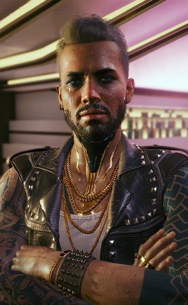

The band was originally founded by Johnny Silverhand and Kerry Eurodyne, though the group's name was
coined by Nancy Hartley, inspired by fact that historical samurai were willing to die for their cause, even
if it was immoral or just plain wrong. Samurai started as a back-street band, playing in various bars and
clubs around Night City, such as the Palladium, Destiny, or Nexus. Their first gig ever was played at the
Red Dirt bar. One night in 2003, after playing in the Rainbow Cadenza, the band was approached by a blitzed
'dorpher', who turned out to be none other than Jack Masters, the head executive at Universal Music at the
time. It took only three weeks for their first single, "Blistering Love," to achieve #1 hit on the
EuroCharts, which soon
they followed up with the album, being one of the few times a debut album achieved such status in such a
short time.
During the next years, Samurai toured around the world, playing concerts with an audience of
thousands of people, even managing to sell out the whole Wembley Stadium. They released a total of six
albums — with three being studio work, the other three being concerts and jam sessions. In early 2007, the
band suffered a huge blow. Bel Isis was married. The rest of the band members didn't see it at first, but
ten weeks after the
ceremony they realized Bel's husband was mistreating her. One day, she finally got the courage to talk about
it with the group after her husband tried to force her to quit Samurai. For Johnny and Kerry that
was the last straw, but by the time they got there it was already too late. Bel's husband had started to
beat her again, but then she threw him out of the window. Nancy was arrested, and after the
trial was convicted to seven months of prison. During that timespan, the band firmly supported her. By
2008, Nancy finally got out of jail. Unfortunately, those seven months of inactivity had put a split in the
band that they were not able to heal. Soon afterwards, they all went on their separate
ways. Henry went to work on a human interface prototype, but an accident fried his brain and he had to
rebuild his mind. Denny joined a band called Mastermind, which went well for her. Nancy decided to change
her name to Bes Isis, and became a major media presence on N54 News. Johnny and Kerry went on to
have successful solo careers, usually touring together as a double ticket.
In 2077, most of the original band got together to play a last gig in the Red Dirt bar, which almost a
century later was still standing.
/*

Johnny Silverhand
Johnny Silverhand, born Robert John Linder, was a famous and influential rockerboy
and lead singer of the band Samurai before its breakup in 2008. A military veteran who defined the
rockerboy movement as it is known today, Silverhand was the most prominent figure who fought against the
corrupted NUSA government and megacorporations, often being described as a terrorist because of this.

Kenny Eurodyne
Kerry Eurodyne is a Night City based music artist, formerly known as the the vocal and
lead/rhythm guitarist for the band Samurai.

Bel Isis
Bel Isis, born Nancy Hartley, is the ex-keyboardist for the band Samurai. After the end
of her musical career, she became an investigative journalist for Network News 54.
Denny
Denny was the drummer for the band Samurai until their breakup, after which she joined the
band Mastermind.Denny had a relationship with Henry sometime after the band broke up.
Henry
Henry was the bassist for the band Samurai until their breakup, after which he fried his
brain while working on a human interface prototype with Blazetech
*/